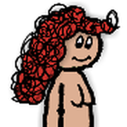
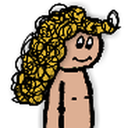
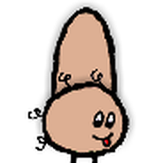

World status this run · since 14:02
9 / 23Alive now4 adults · 3 children · 2 babies
19Births+ 4 Eves
14Deaths9 starvation · 5 cold
3Deepest generationHOPE: Eve → Joy → Faith
3 livingFamilies1 extinct (KETTLE)
5 / 19Reached adulthoodage ≥ 14, of those born
11.2 yMedian age at deathn = 14 · IQR 0.5–16
$3.12LLM spend1,904 calls · cap $10
The people click anyone for their page
Living 9Dead 14Everyone 23
By familyBy ageHungriest
HOPE
ASHGROVE
MOSS
Personality cloud MOCKevery life, in trait space
x
y
HOPE
ASHGROVE
KETTLE
MOSS
filled = alive · hollow = dead
n = 23



Reading the people: hair colour comes from personality, so siblings differ. Hair style and face are shared by the family. Chart colours mark the family, not the hair.
Families
📖 The story so far
Four Eves woke up in the grassland. HOPE stayed by the berries and is on its third generation. ASHGROVE learned to make tools but keeps losing babies. MOSS keeps wandering off. KETTLE had two children and lost both to hunger; the family is gone.
Map living people · 140 × 112 tiles
● = person · shape = family
Recent deaths 14 total
📻 World news narrator · every 30 s
- Joy Hope has placed her daughter beside a gooseberry bush, which is how the Hopes have always done it, all two generations of them.
- Pip Kettle, aged two, has starved. The Kettle line, founded thirty-one minutes ago with some confidence, is now extinct.
- Bram Ashgrove has made a sharp stone. He has not yet found anything to use it on.
- Eve Moss walks north, alone, for the fourth time. Her son Odo watches her go.